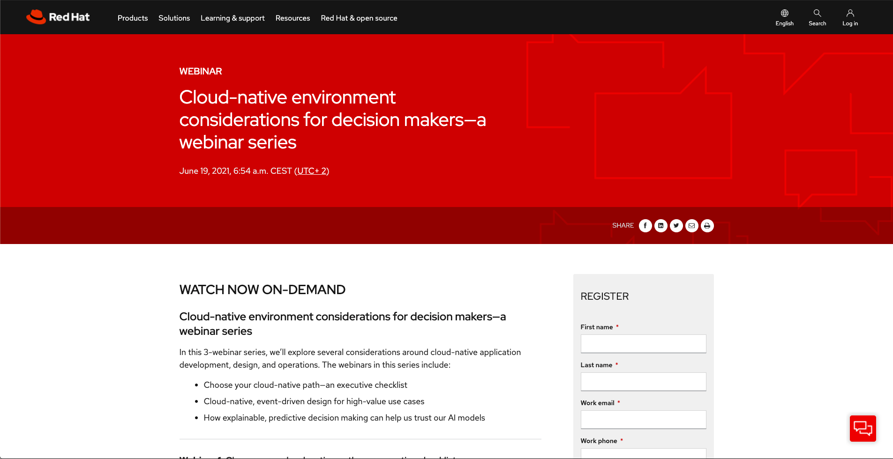

Cloud native considerations webinar
18 June 2021

Cloud-native environment considerations for decision makers—a webinar series
In this 3-webinar series, we’ll explore several considerations around cloud-native application development, design, and operations. The webinars in this series include:
-
Choose your cloud-native path—an executive checklist
-
Cloud-native, event-driven design for high-value use cases
-
How explainable, predictive decision making can help us trust our AI models